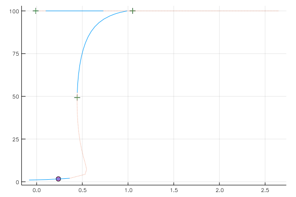
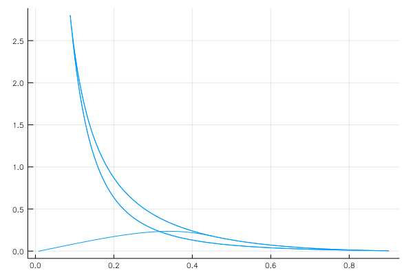

Bazykin's predator-prey system
using Bifurcations
using Bifurcations.Examples: Bazykin85
solver = init(Bazykin85.prob)
solve!(solver)
ERROR: Base.LinAlg.SingularException(2)
WARNING: Failed to find bifurcation point within:
SimpleBifurcationInterval u0=sweeps[1].u[4] h=0.16 dir=1
happened between:
u0 = [100.0, 0.0, 0.03]
u1 = [100.0, 0.0, -0.05]
Codim1Solver <Continuous>
# sweeps : 3
# points : 49
# simple bifurcations: 2
# special points : 4
Plot codimension-one bifurcations:
using Plots
using Bifurcations: plot # workaround
plt1 = plot(solver.sol)

Let's follow the Hopf and Saddle-Node bifurcations:
using Bifurcations: special_points
using Setfield: @lens
point_list = sort!(special_points(solver), by=p->p.u0[end])
codim2_solvers = []
for point in point_list[2:3]
@show point
codim2_prob = BifurcationProblem(
point,
solver,
(@lens _.δ),
(0.0, 10.0),
)
codim2_solver = init(
codim2_prob;
nominal_angle_rad = 0.01,
max_samples = 1000,
)
push!(codim2_solvers, codim2_solver)
solve!(codim2_solver)
@show codim2_solver
end
point = SpecialPointInterval <Continuous hopf>
happened between:
u0 = [2.0252, 1.6964, 0.361185]
u1 = [1.27534, 1.13113, 0.114275]
codim2_solver = Codim2Solver <Continuous>
# sweeps : 2
# points : 199
# simple bifurcations: 0
# special points : 1
point = SpecialPointInterval <Continuous saddle_node>
happened between:
u0 = [52.1071, 11.5697, 0.444421]
u1 = [46.3929, 11.5438, 0.442615]
codim2_solver = Codim2Solver <Continuous>
# sweeps : 2
# points : 2002
# simple bifurcations: 0
# special points : 12
Merge two continuations and draw the bifurcation diagram:
plt2 = plot()
for s in codim2_solvers
n = length(s.sol.sweeps[1].super.u[1])
plot!(plt2, s.sol, vars=(n - 1, n))
end
